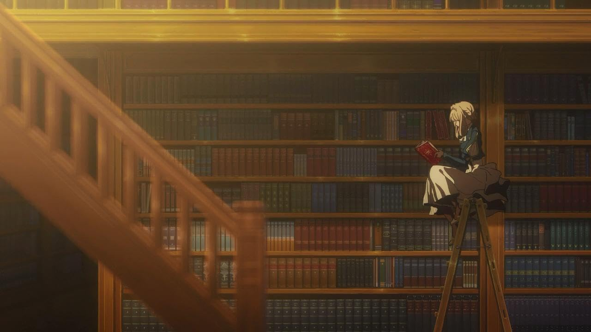
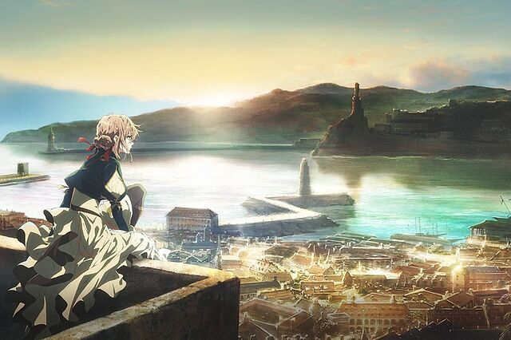
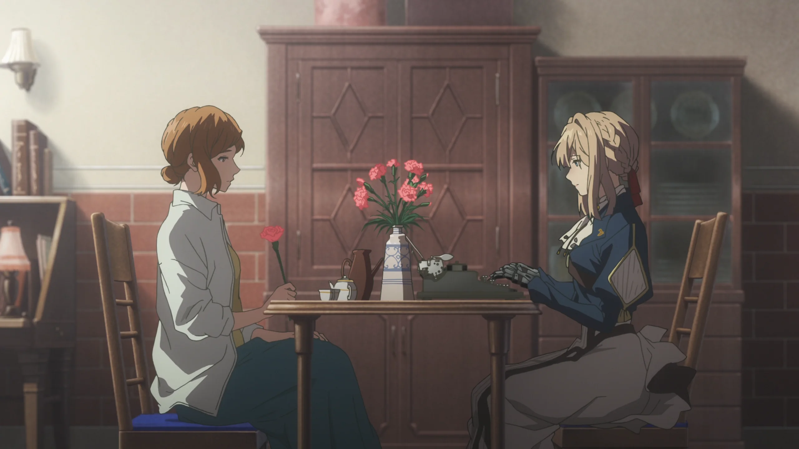
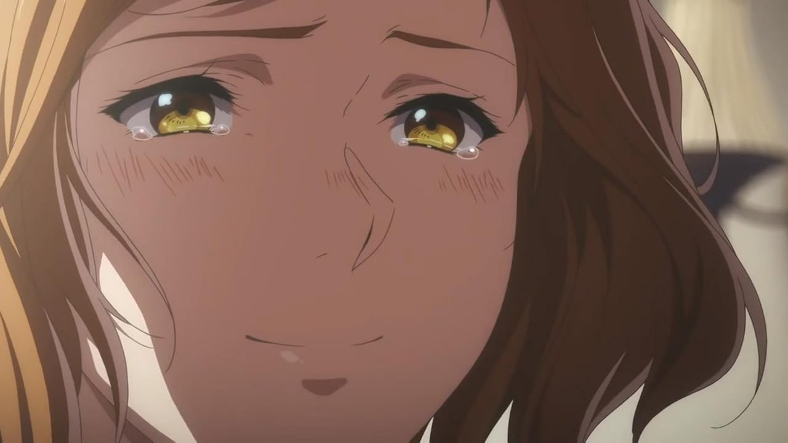

La muñeca de memoria automática y "Te amo"
A lo largo del episodio, Violet trabaja diligentemente para comprender los sentimientos de Irma. La tarea no es fácil, ya que la cantante está cerrada emocionalmente y es reticente a compartir su dolor. Sin embargo, a medida que Violet descubre más sobre el pasado de Irma, ella se da cuenta de las profundas cicatrices que la pérdida ha dejado en el corazón de la cantante. Violet, quien también está lidiando con su propio dolor y el deseo de comprender las emociones humanas, encuentra una conexión especial con Irma. A medida que la relación entre Violet e Irma se desarrolla, vemos a Violet usar sus habilidades como Auto Memory Doll para ayudar a Irma a expresar sus sentimientos a través de las palabras. La metamorfosis de Irma de una mujer rota a alguien capaz de enfrentar su dolor y encontrar consuelo en la memoria de su amado es un testimonio del poder de la empatía y la comunicación. La interpretación de Irma de la canción, inspirada por la carta que Violet ayuda a escribir, es un momento culminante del episodio, lleno de emoción y belleza.
El episodio no solo profundiza en la habilidad de Violet para conectar con los demás y ayudarlos a encontrar sus propias voces, sino que también subraya su propio crecimiento emocional. La historia de Irma sirve como un reflejo del viaje interno de Violet, quien continúa aprendiendo a lidiar con su propio dolor y descubrir el verdadero significado del amor y el duelo. Es un episodio que equilibra perfectamente la tristeza y la esperanza, mostrando el impacto duradero de las relaciones humanas. En conclusión, "Una carta de amor para ti" es un episodio especial que captura la esencia de "Violet Evergarden". A través de la narrativa emocionalmente resonante y los personajes complejos, nos recuerda la importancia de la empatía, la conexión humana y la capacidad de sanar a través de las palabras y la comprensión mutua. Es una adición significativa a la serie que profundiza nuestra apreciación por Violet y su mundo.
Galeria



